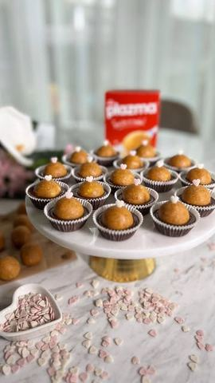

Da li ste čuli da je u toku veeeeliko @plazma_zvanicna Pl…

Moja beleška
SačuvanoDa li ste čuli da je u toku veeeeliko @plazma_zvanicna Plazma Mlevena nagrađivanje..? Svake nedelje možete osvojiti čak 500.000 rsd za opremanje nove kuhinje u @emmezeta_rs rs i predivne dnevne nagrade 😍 Kako do nagrada..?
Sastojci
- Potrebno je
Priprema
Nagradna igra traje do 02.04.2023. A kako bih ja drugačije iskoristila pakovanje Plazma Mlevene nego da napravim neku finu poslasticu 😍 A recept ostavljam i vama 🥰🥰🥰 Plazma pomorandza pralinice 🫶🏼 Mlevenu Plazmu sjediniti sa otopljenim puterom, najsitnije izrendanom zaleđenom pomorandžom (sa korom), šećerom u prahu pa od toga formirati kuglice. U manje korpice sipati crnu čokoladu koju ste otopili (možete dodati i dve kašike ulja), dovoljno je popuniti 1/3 korpice, a onda u svaku korpicu dodati po jednu Plazma kuglicu. Malo ohladiti u frižideru dok se ne stegnu i uživati u degustaciji. Fenomenalne suuu! A ukoliko koristite Plazma Mlevena posnu i margarin umesto putera, imate posnu varijantu kolačića 🫶🏼 Verujem da ćete ove pralinice isprobati i degustirati sa uživanjem i da će nekom doneti sreću 😍😍😍 Pa, neka je sa srećom 🥂🥰
Originalni opis sa Instagrama
Da li ste čuli da je u toku veeeeliko @plazma_zvanicna Plazma Mlevena nagrađivanje..? Svake nedelje možete osvojiti čak 500.000 rsd za opremanje nove kuhinje u @emmezeta_rs rs i predivne dnevne nagrade 😍 Kako do nagrada..? • Kupi minimum 300 gr Plazma Mlevene ili Plazma Mlevene posne • Pošalji brojač računa SMS-om na 5544 ili unesi podatke na www.plazmasticarnica.rs Nagradna igra traje do 02.04.2023. A kako bih ja drugačije iskoristila pakovanje Plazma Mlevene nego da napravim neku finu poslasticu 😍 A recept ostavljam i vama 🥰🥰🥰 Plazma pomorandza pralinice 🫶🏼 Potrebno je: •200 gr Plazma Mlevene •125 gr otopljenog putera •80 gr šećera u prahu •1 manja zaleđena pomorandza •300 gr crne čokolade Mlevenu Plazmu sjediniti sa otopljenim puterom, najsitnije izrendanom zaleđenom pomorandžom (sa korom), šećerom u prahu pa od toga formirati kuglice. U manje korpice sipati crnu čokoladu koju ste otopili (možete dodati i dve kašike ulja), dovoljno je popuniti 1/3 korpice, a onda u svaku korpicu dodati po jednu Plazma kuglicu. Malo ohladiti u frižideru dok se ne stegnu i uživati u degustaciji. Fenomenalne suuu! A ukoliko koristite Plazma Mlevena posnu i margarin umesto putera, imate posnu varijantu kolačića 🫶🏼 Verujem da ćete ove pralinice isprobati i degustirati sa uživanjem i da će nekom doneti sreću 😍😍😍 Pa, neka je sa srećom 🥂🥰 • • • #plazma #plazmamlevena #praline #slatkisi #slatkirecepti #ukusnahrana #nagradjivanje #novakuhinja #kuhinjaizsnova